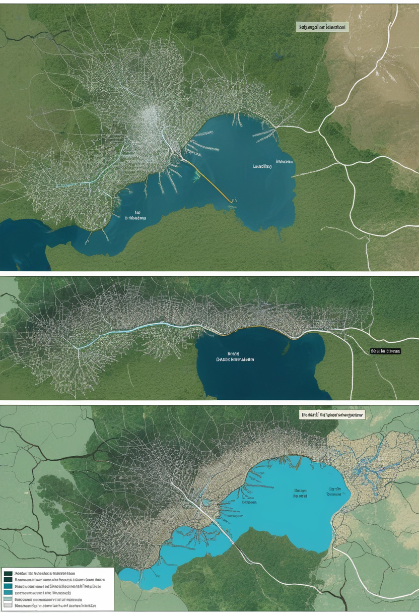
火曜日の便り。スリランカでデング熱が急増し2026年累計44,000例・死者28名に達した——4月の月間5,651例が6月前半だけで10,638例へと約2倍に跳ね上がった。2025年11月の台風ディトワ後の洪水が蚊の繁殖地を広げ、エボラPHEIC・mpoxクレードIbとの三重同時流行のなかWHOの対応資源が限界に近づいている。エボラDRCでは6/21確定値で死者254名・確認915例に増加し、埋葬チームへの攻撃と人質事件が封じ込めを阻害した。SMAの世界ではスピンラザ高用量が米・EU・スイス・日本で承認完了し、アピテグロマブPDUFA（9/30）のEMAも年内決定へ向かう。Neuralinkは次世代3,000電極機を予告し、Synchronがピボタル試験始動を宣言した。JWSTが系外惑星WASP-94Abに朝は雲・夕は快晴の非対称大気を確認し、Euclidが明日（6/24）銀河バルジのデータを放出する。ショウジョウバエ脳アップロードが生んだデジタル意識の権利論争は国際的に広がり続けている。問いと前進が交差する火曜日。
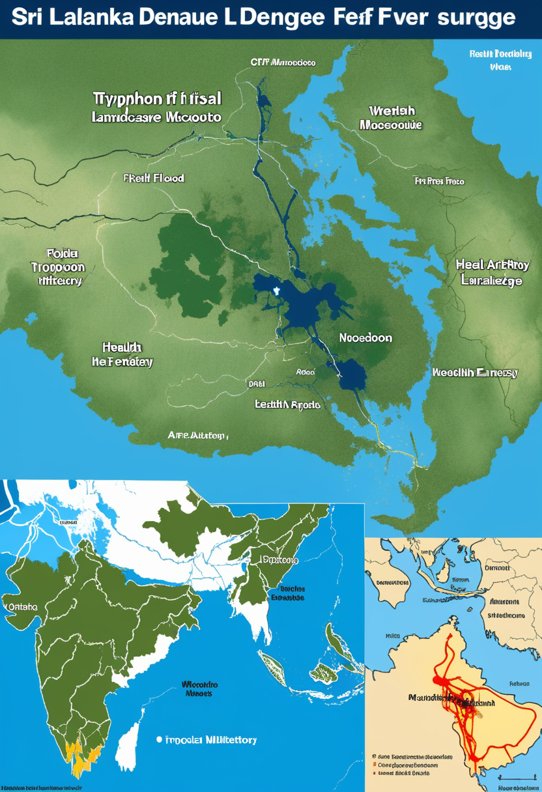
スリランカ保健当局が6月19日に発表した最新データによると、2026年1月以降の累計デング熱感染者数が44,000例以上・死者28名に到達。4月の月間症例（5,651例）から6月前半（10,638例）にかけて約2倍に急増した。2025年11月末の台風ディトワによる洪水被害で蚊の繁殖地が拡大したことに加え、無計画な都市化が流行を加速させている。2019年（年間105,000例超）以来最大規模の流行となる可能性があり、当局は学校・住宅・建設現場を対象とした特別清掃プログラムを展開中。エボラPHEIC（継続中）・mpoxクレードIb（マダガスカル2,000例・世界最多）との三重同時流行がWHOの対応資源を圧迫している。
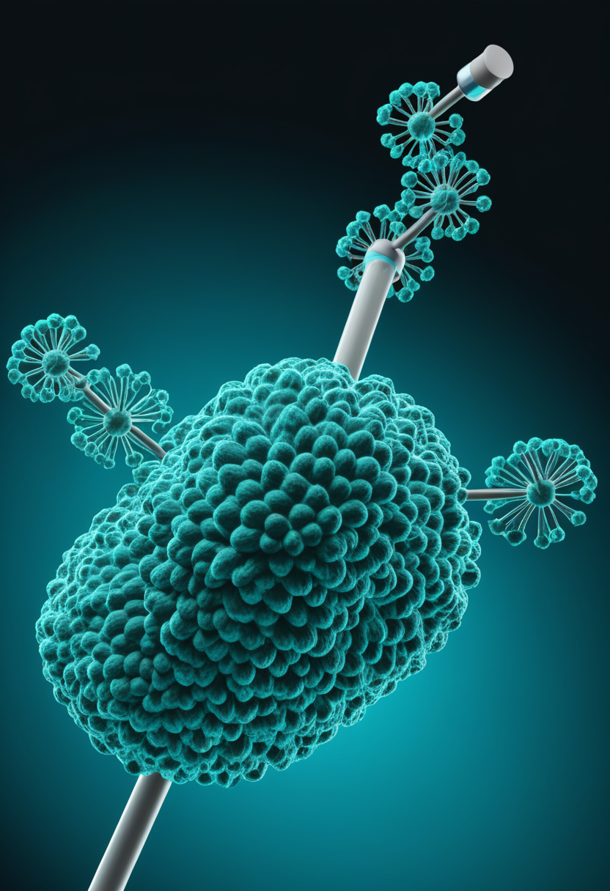
Biogenは2026年3月30日、スピンラザ（ヌシネルセン）の高用量製剤がFDAに承認されたと発表した。新投与レジメン：50mg×2回（14日間隔で急速ローディング）＋28mg維持投与（4ヶ月毎）。従来の12mg低用量製剤と比較して高濃度でSMNタンパク量の増加を目指す。承認根拠はDEVOTE試験（治療歴なし・有りの両群を対象）で10年超の臨床データに裏打ちされている。高用量スピンラザは現在、米国・EU・スイス・日本でも承認取得済みで国際標準治療として確立しつつある。
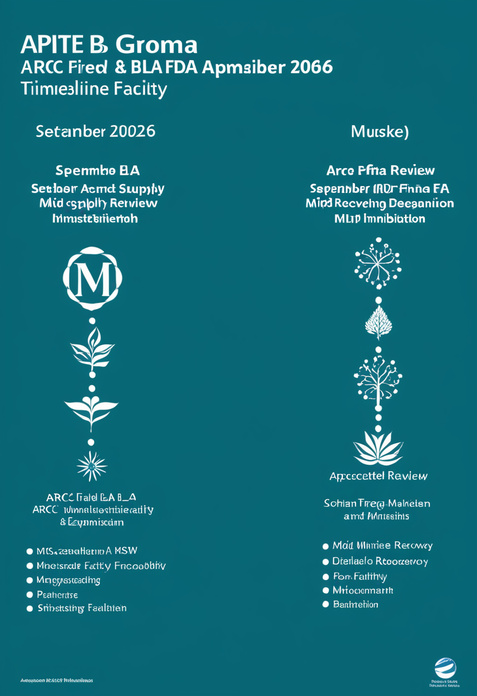
Scholar Rockのアピテグロマブ（筋肉特異的ミオスタチン選択的阻害薬）のBLAをFDAが受理し、PDUFA審査期限は2026年9月30日。ファストトラック・希少疾患・優先審査・小児稀少疾患の4指定を付与済み。製造施設はCatalent Indiana（Novo Nordisk傘下）＋米国内第2施設を追加し供給安定性を確保（かつての施設懸念でBLAを取り下げ・再提出した経緯あり）。EMAのMAA審査も進行中で欧州承認決定は2026年中頃の見込み。スピンラザ高用量との多層治療と「筋肉回復」アプローチが2026年のSMA治療の両輪となる。
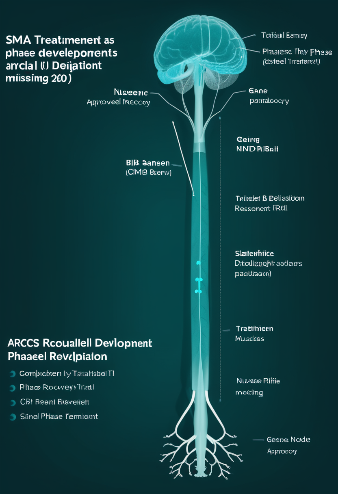
承認済み3剤（スピンラザ・ゾルゲンスマ・エブリスジ）に加え複数の開発中薬が臨床段階にある。①NMD670（SMNスプライシング増強薬）：Phase II進行中（終了予定2026年初）。②サラネルセン（BIIB115）（Biogen/IONISアンチセンス薬）：FDA画期的療法指定取得済み、遺伝子治療後の患者にも対応できる設計が注目点。③アピテグロマブの欧州承認は年内予定。SMA治療は「神経を守る」から「筋力を取り戻す」多層同時治療へ進化しており、2026年は治療戦略の転換点となる年。
スピンラザ高用量が4地域で承認完了し、アピテグロマブPDUFA（9/30）にEMA年内決定が加わり、NMD670・サラネルセンが次を狙う ── 「神経を守る」から「筋力を取り戻す」SMA治療の多層化が2026年に加速する。
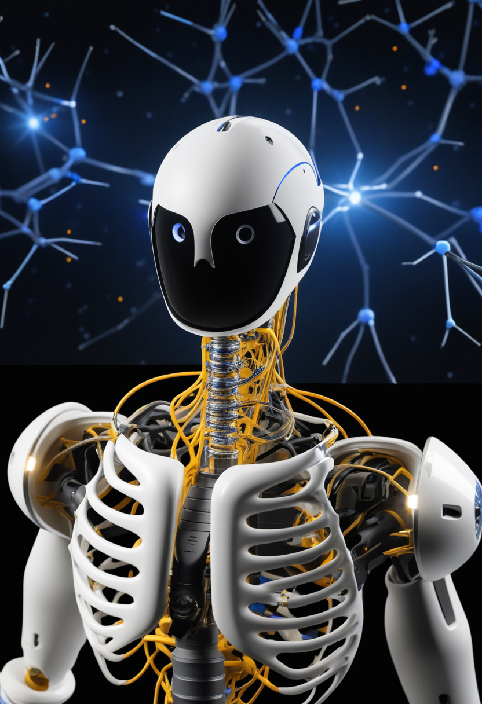
「Two Years of Telepathy」レポート（2026-06-05）によると、Neuralinkは世界で21名のNeuronautsを登録済み。初期の技術課題へのミティゲーション実施後、20名中18名で信号品質が向上。FDAはNeuralink Telepathyを言語回復用途で「画期的機器（ブレークスルーデバイス）」指定（審査迅速化パスウェイ）に追加。次世代機では電極数を現行1,000から3,000に増強し信号の長期維持を目指す。高量産体制と完全自動手術手順（硬膜除去なし）への移行を2026年中に計画。ALS患者Nickは思考だけでロボットアームを制御し自力で食事・かゆみ解消を達成した。
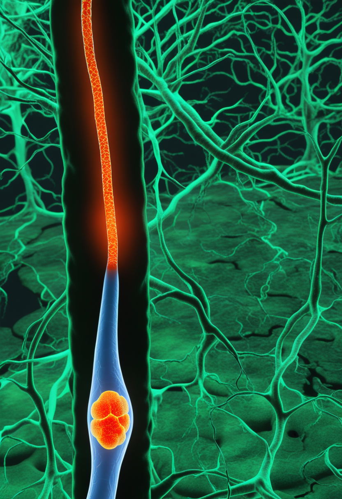
Synchronは2025年11月に2億ドルのシリーズDを調達し、埋め込み型BCIとして史上初のFDA PMA（販売前承認）を目指すピボタル臨床試験を2026年中に開始する。血管内アプローチ（開頭不要）のStentrodeは米国・オーストラリアで計10名に植設済み。COMMAND早期実現可能性試験では12ヶ月安全エンドポイントをクリア（Apple統合達成と同試験）。次世代「全脳インターフェース」の詳細は2026年内に発表予定。Neuralink・Synchronの二大勢力が同時期にFDA審査加速路線を走る2026年のBCI競争が本格化した。
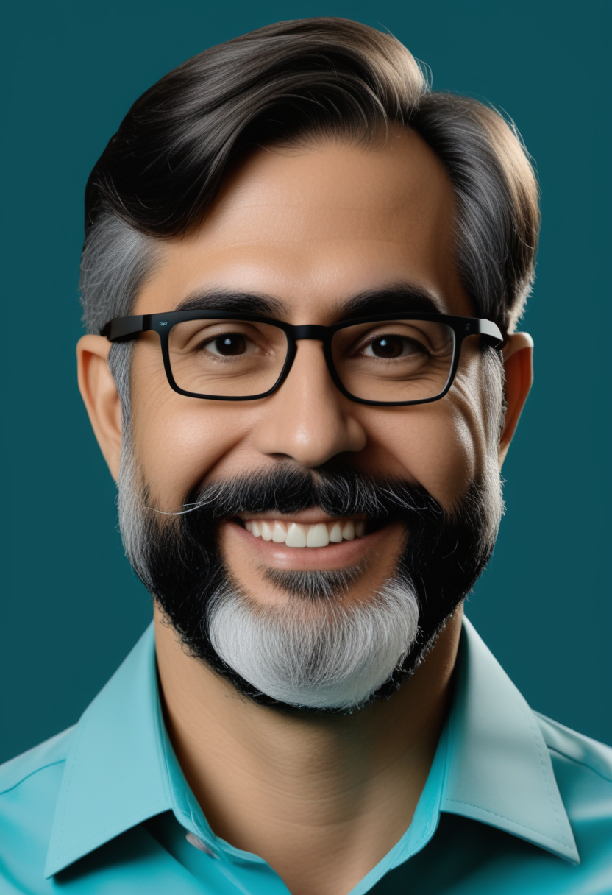
Tobii ProがTobii Pro Lab製品の一部としてウェブカム型視線追跡ツールをリリース。専用ハードウェアなしでオンライン研究参加者の視線データ収集が可能になり、研究アクセスの拡大とコスト削減を実現。2026年後半にはローカル研究版もリリース予定。2026年1月にFadi PharaonがAnand Srivatsa後継として新CEOに就任。非侵襲・ウェブカムという最も低コストな層での視線入力が拡大することで、BCIの「3層アプローチ」（Neuralink侵襲・Synchron低侵襲・Tobii非侵襲）がより多くの研究者・患者に届く土台が整う。
Neuralink次世代3,000電極機予告・Synchronピボタル試験始動・Tobii研究民主化 ── 侵襲・低侵襲・非侵襲の三層BCIが2026年に「実証」から「規制・商業・普及」フェーズへ同時転換する。
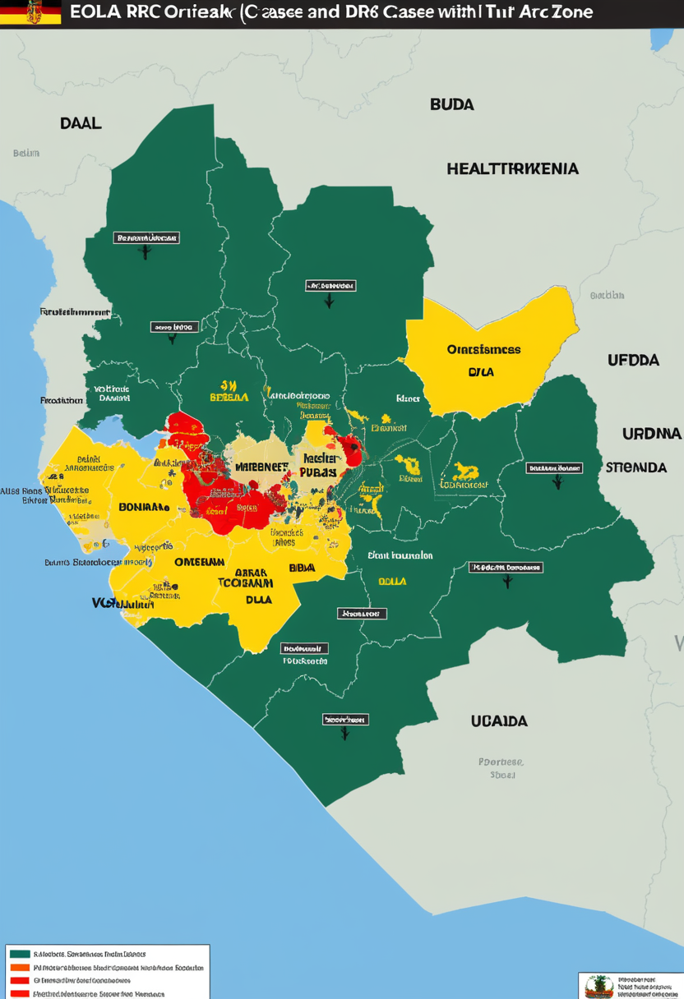
6月21日時点のWHO確定値で、コンゴ民主共和国（DRC）のエボラ出血熱（ブンディブギョ型）死者数が254名に増加（6/17比 +22名/4日間）。累計確認感染者は915例（DRC 896例＋ウガンダ19例）。DRC最多被害のイツリ州では20の保健区域で767例を記録。6月17日にはモンブワル保健区域で安全埋葬チームへの攻撃が発生し5名が人質に取られた。ウガンダは6月5日以降の新規感染ゼロを継続しており越境封じ込めは機能中。ブンディブギョ型に有効なワクチン・治療薬はなく候補薬の試験が進行中。
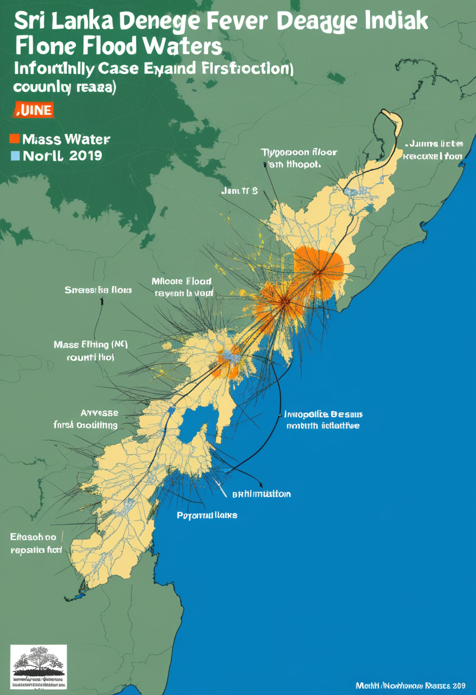
スリランカ保健当局が6月19日に発表した最新データによると、2026年1月以降の累計デング熱感染者数が44,000例以上・死者28名に到達。4月の月間症例（5,651例）から6月前半（10,638例）にかけて約2倍に急増した。2025年11月末の台風ディトワによる洪水被害で蚊の繁殖地が拡大したことに加え、無計画な都市化が流行を加速させている。2019年（年間105,000例超）以来最大規模の流行となる可能性があり、当局は学校・住宅・建設現場を対象とした特別清掃プログラムを展開中。
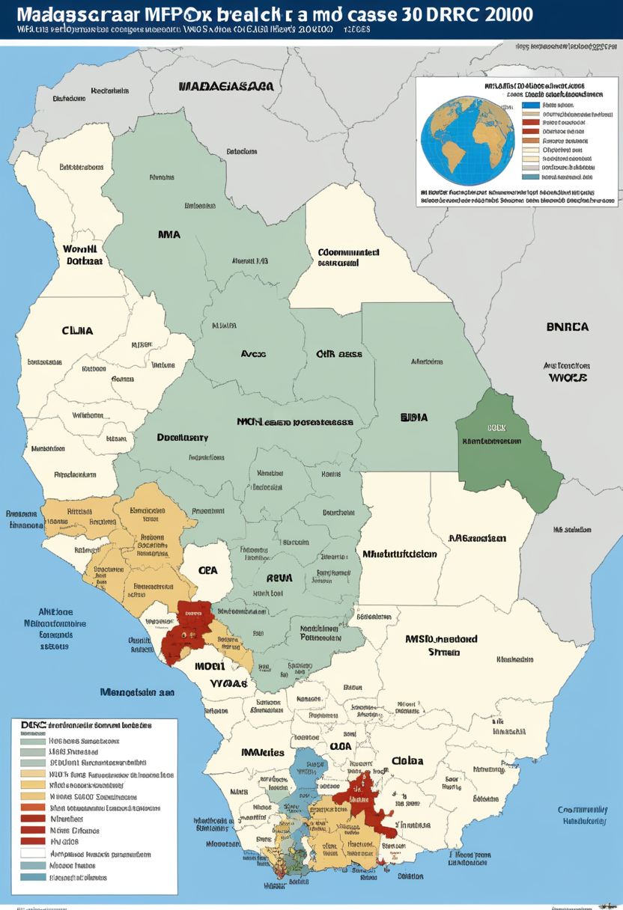
2025年12月17日から2026年6月9日までのWHO確定値で、マダガスカルのmpox（クレードIb）が累計2,000例確認・7名死亡に到達（地域内コミュニティ感染継続）。同期間でDRC（154例）を上回り世界最多感染国。MVA-BNワクチン30,000回分を割り当て済みだが接種ペースは課題。エボラPHEIC（継続中）との複合危機でアフリカのWHO One Response対応資源が限界に近づいている。スリランカのデング急増と合わせ、3つの流行が同時にWHOの応答能力を試している。
エボラ死者254名・埋葬チーム人質、スリランカデング44,000例・月2倍増、マダガスカルmpox世界最多2,000例 ── 三重同時流行がWHOの応答限界を試す火曜日。
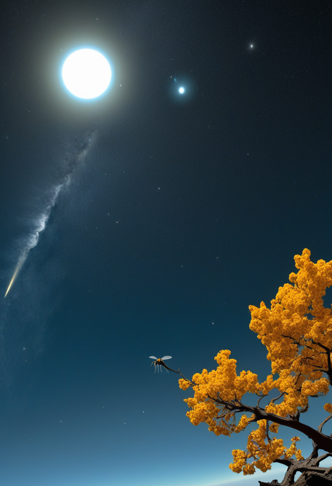
アリゾナ州立大学のSagnick Mukherjee博士らがScience誌に発表した研究で、JWSTが700光年先の系外惑星WASP-94A bにおける劇的な朝夕非対称を検出した。惑星の朝側（夜→昼方向の大気流れ）ではマグネシウムシリケート（岩石鉱物）から成る砂状雲が生成されるが、夕側（昼→夜方向）では雲がほぼ消滅している。JWSTがトランジット観測中に惑星の先行縁と後退縁を個別に分析する新手法で達成した成果。WASP-121bとは別の惑星での独立した確認事例であり、系外惑星大気科学の定量的段階への移行を示す。
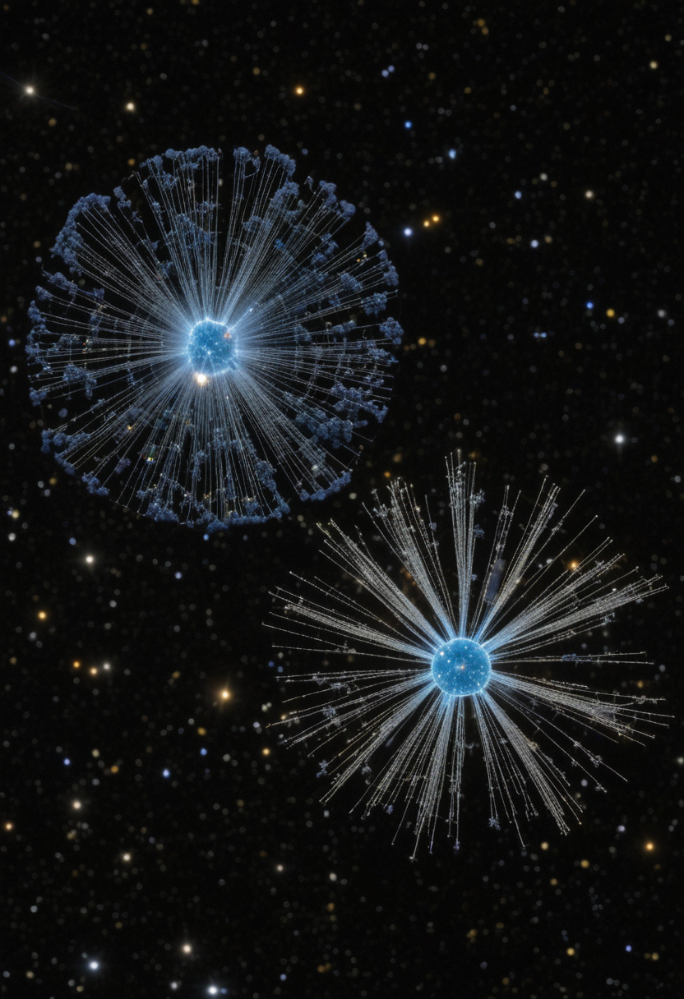
JWST COSMOS-Web調査チームが164,000銀河を解析し、宇宙誕生から約10億年後まで遡る宇宙大規模構造（コズミックウェブ）の最精細マップを完成させた。宇宙の「泡と網」状フィラメント構造の形成史を前例のない精度で追跡することに成功し、ダークマター・暗黒エネルギーの分布モデルに新たな制約を与える。また、ビッグバンから約20億年後に形成した巨大銀河が回転をほぼ持たないという観測も並行して報告されており、銀河形成理論に再考を迫っている。
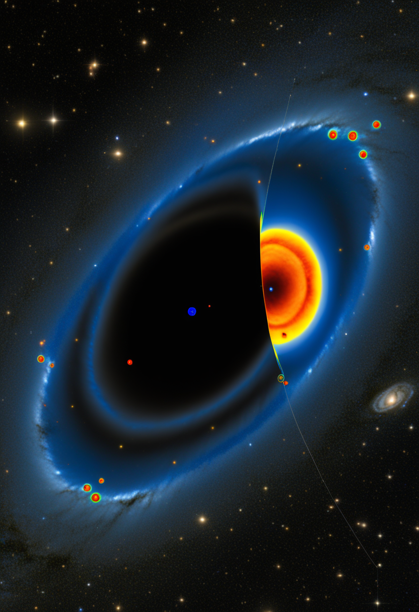
ESAとEuclid Consortiumは明日2026年6月24日に第2次クイックデータリリース（Q2）を公開予定。Q2の対象はユークリッド銀河バルジ調査（EGBS）で、2025年3月23日に取得した銀河中心付近4.8平方度のデータを収録。NASAのNancy Grace Roman宇宙望遠鏡（2027年以降に同領域を5年間モニタリング予定）との連携に向けた重力レンズ天体の特定基礎データとなり、系外惑星探索にも貢献する見込み。本格コスモロジーデータリリース（暗黒エネルギー・暗黒物質マッピング）は2026年10月予定。
JWSTがWASP-94Abの朝雲・夕快晴を確認し164,000銀河で宇宙網を描き、Euclidが明日銀河バルジのデータを放出する ── 火曜日の宇宙は三方向から人類の視野を押し広げる。
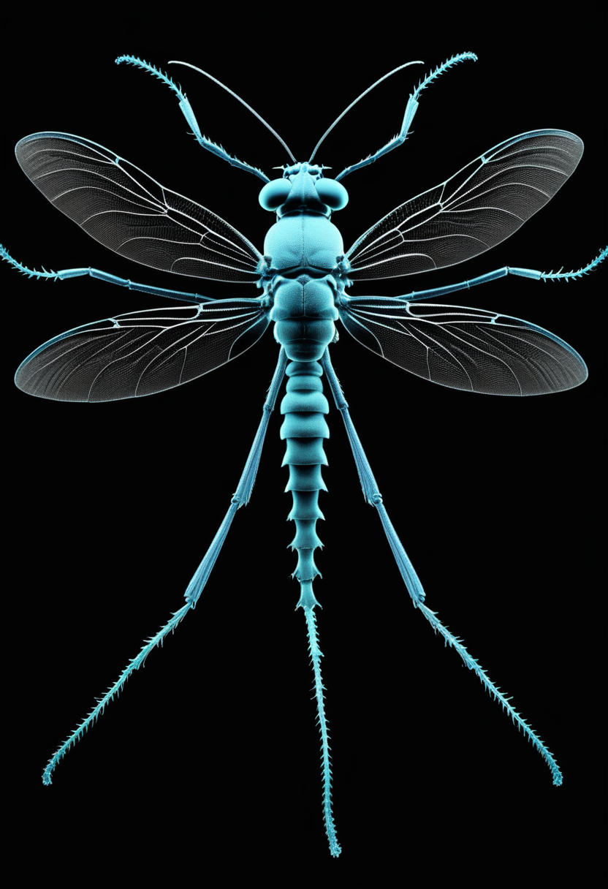
2026年3月にEon Systems PBCが達成したショウジョウバエ14万ニューロンの完全デジタルアップロード（閉ループ行動再現・世界初）は、AI倫理コミュニティに波紋を広げ続けている。「シミュレートされた昆虫の行動は意識を持つか」「エミュレートされた生物の法的地位は」といった論点が国際的に展開中。ORF Onlineは「デジタル化された意識と認知主権」と題した論考を掲載し、デジタルマインドが市民権・プライバシー・所有権法に与える影響を分析した。科学の進展に対し、政策・倫理の議論が周回遅れになりつつある。
PMCに掲載された「Digital Twin Cognition: AI-Biomarker Integration in Biomimetic Neuropsychology」（PMC12561581）は、個人の認知システムを動的に仮想化するデジタルツイン脳フレームワークを体系的にレビュー。遺伝・神経画像・行動データを統合しアルツハイマー・パーキンソン・統合失調症向けの精密介入を可能にする。精度85〜95%の主張は小規模・均質コホートに基づくものであり、実臨床での実測値は10〜15%低い可能性があると論文自身が注意喚起している。アルゴリズムの解釈可能性と多様な集団への一般化が今後の課題。
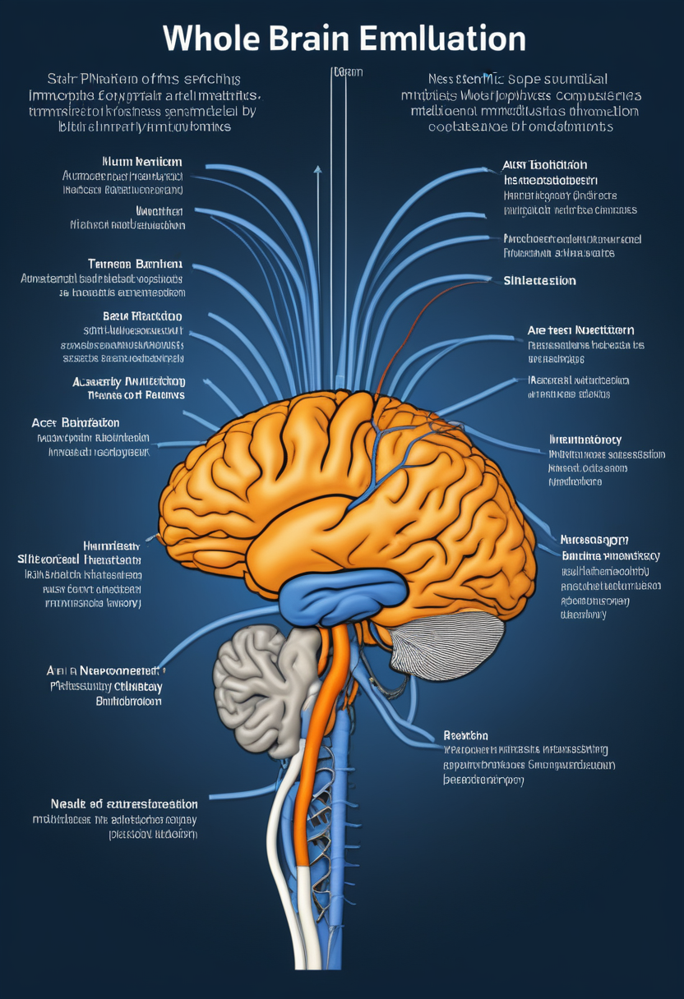
「Futures with Digital Minds: Expert Forecasts in 2025」（arxiv 2508.00536）は、計算神経科学・AI・哲学の専門家による将来予測をまとめた報告書。全脳エミュレーション（WBE）は30〜40年後が現在の科学的コンセンサスであり、医療応用向けの部分脳モデルはより早期に実現の可能性がある。現時点では人間ニューロンの完全なシリコン再現は達成されておらず、意識転送の哲学的障壁も根深い。「情報転送はコピーに過ぎず、同一性の移転を意味しない」との批判的見解も根強く、技術と哲学の対話が続く。
ショウジョウバエ脳アップロードが法的地位論争に点火し、MDPI論文が精度主張への注意を促し、arxiv専門家予測がWBEは30〜40年先と整理する ── 「デジタルの自分」に技術・倫理・哲学が三方向から迫る火曜日。
今日の世界は、スリランカでデング熱の月間症例が約2倍に跳ね上がり、エボラDRCで埋葬チームが攻撃を受け5名が人質に取られ、マダガスカルmpoxが世界最多2,000例に達した火曜日だった。三重の感染症危機がWHOの応答能力を同時に試している。SMAの世界ではスピンラザ高用量が4地域で承認完了し、アピテグロマブのEMA決定も年内へと収束しつつある。Neuralinkが次世代3,000電極機を予告し、SynchronがFDA史上初の埋め込み型BCI承認へ向けてピボタル試験を始動した。JWSTは700光年先の惑星に「朝は雲・夕は快晴」という天気を確認し、164,000銀河で宇宙の網を描き直した。明日Euclidが銀河バルジのデータを解放する。ショウジョウバエの脳アップロードが国際倫理論争へと波及し、専門家たちは全脳エミュレーションの実現を30〜40年先と整理した。
洪水のあとに増えるものがある。それでも人は地図を描き続ける。おはようございます。